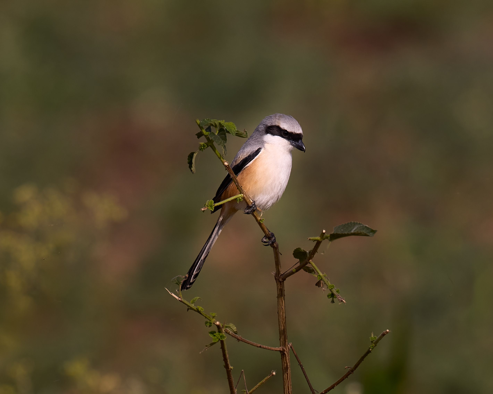

The Long-Tailed Shrike is a striking predatory songbird with a grey head, dark eye mask, brown wings, and a long tail. It occupies open country with scattered bushes and trees, where it hunts insects, small reptiles, and occasionally small birds. Like other shrikes, it often watches from an exposed perch before dropping rapidly onto prey. Its exceptionally long tail, grey head, and dark facial mask help distinguish it from the smaller Bay-Backed Shrike and other Indian shrikes.